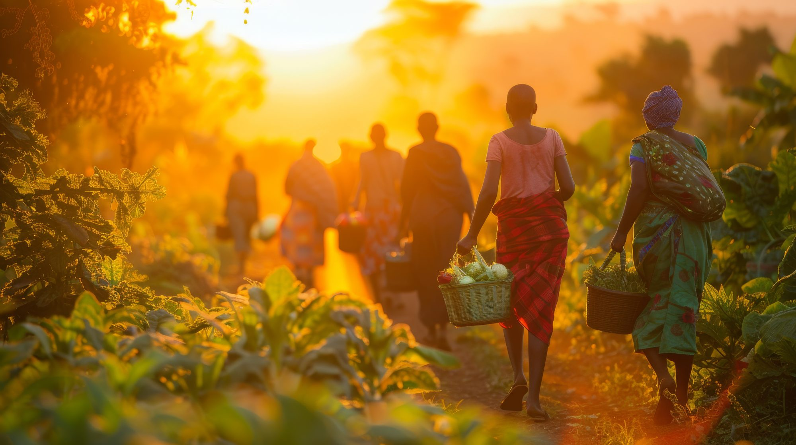
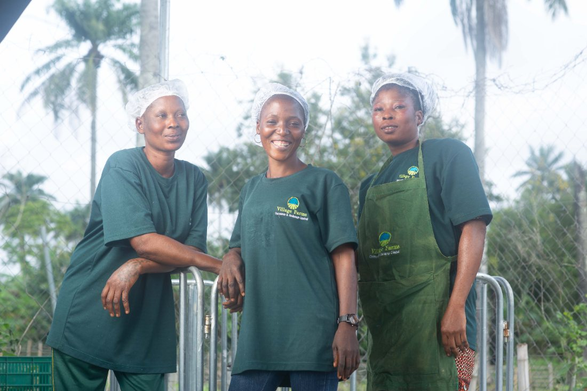
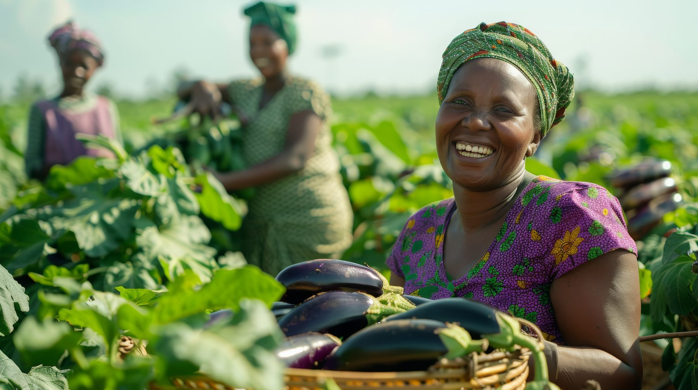
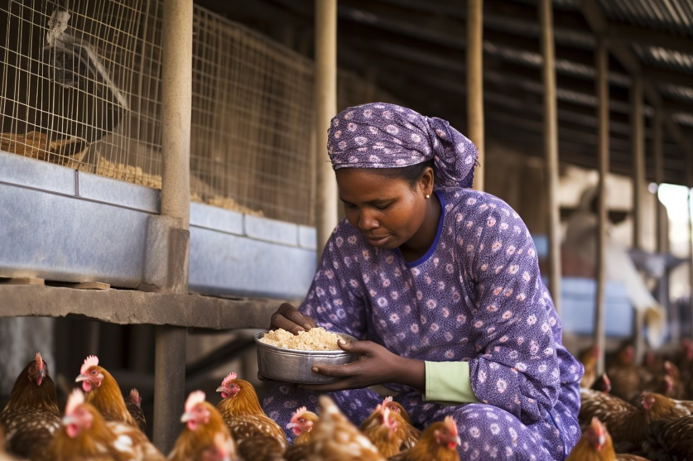

{{ p.tag }}
{{ p.num }}
{{ p.title }}
{{ p.body }}

Fudfarmer Foundation works directly with female farmers and produce traders, providing interest-free loans, market access, and the resources they need to build sustainable livelihoods.
Across communities, women are the driving force behind agriculture. Female farmers cultivate the land. Market women and produce traders keep the food supply moving. Together, they sustain families and feed communities.
Yet despite this central role, women in agriculture face barriers that their male counterparts rarely encounter, including limited access to credit, exclusion from formal markets, and a persistent lack of information about grants, financial tools, and growth opportunities.
The result: capable, hardworking women stuck at the same level year after year, not because of ability, but because the systems around them were never designed to include them.

"A lot of these women have limited access to education, financial services, and information about grants or growth opportunities. Creating a way for them to be included in the agricultural value chain has been a lifelong dream."
— Titilayo Adesoga, Founder & CEO"To give every woman in agriculture a fair fighting opportunity."
A world where female farmers and produce traders have equal access to the capital, markets, and knowledge needed to build thriving businesses while strengthening the communities around them.

Three pillars, each targeting a specific barrier that keeps women in agriculture from reaching their potential.
{{ p.body }}
Rather than setting up a service and waiting for women to find it, our team goes directly into the communities where female farmers and produce traders are already working.
{{ step.body }}
We believe the woman who wakes before dawn to tend her farm deserves the exact same opportunities as anyone else.
We believe feeding a community is not small work. It is not invisible work. It is not work that should ever go unsupported.
We believe that when a woman in agriculture gets a fair shot, she doesn't just transform her own life. She uplifts her children, her neighbors, her community, and the next generation.
We believe the barriers women face are not a reflection of their ability. They are the product of systems that were never designed to include them.
And systems can be changed.
We believe an interest-free loan is not charity. It is simply the removal of an obstacle between a capable woman and the future she is already building.
We believe one empowered woman creates a ripple. Given enough ripples, even the most stagnant waters begin to move.
This is why the Fudfarmer Foundation exists: not to rescue women, but to remove what stands in their way.
The real measure of this work is not in the loans disbursed. It's in the lives changed.
Our work spans the full breadth of women's involvement in agriculture, from the smallholder farmer cultivating her plot, to the produce trader connecting farms to markets, to the associations and cooperatives that organise women's collective power.
We work where women work. In the field, in the market, and in the communities that depend on what they produce.

We are grateful to every individual, organisation, and institution that supports this mission, whether through funding, mentorship, market linkages, or amplifying our reach.
Whether you are a female farmer or produce trader looking for support, an organisation that wants to partner with us, or someone who simply believes this work matters, we want to hear from you.
We respond to every message.

We'd love to hear from you, whether you're seeking support, want to partner with us, or simply want to learn more about our work.
We respond to every message.